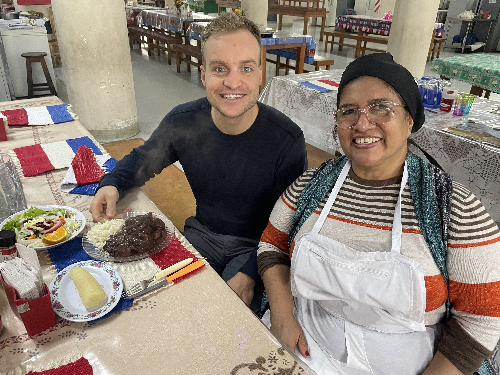
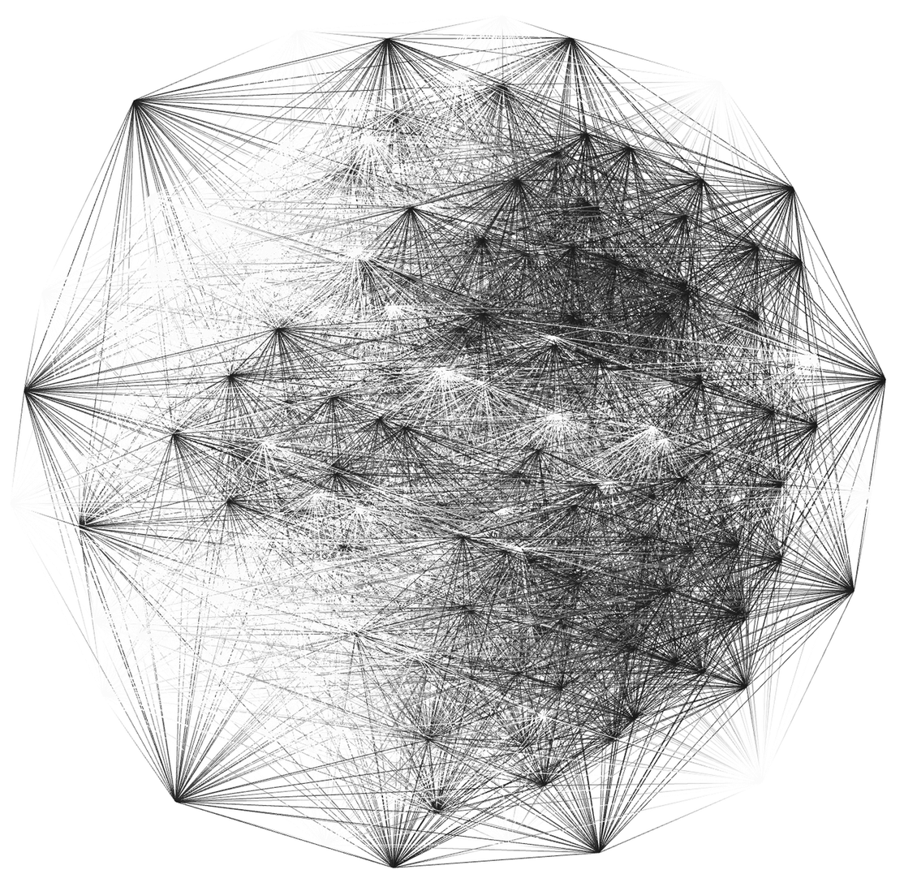
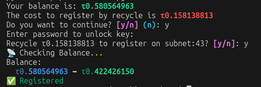
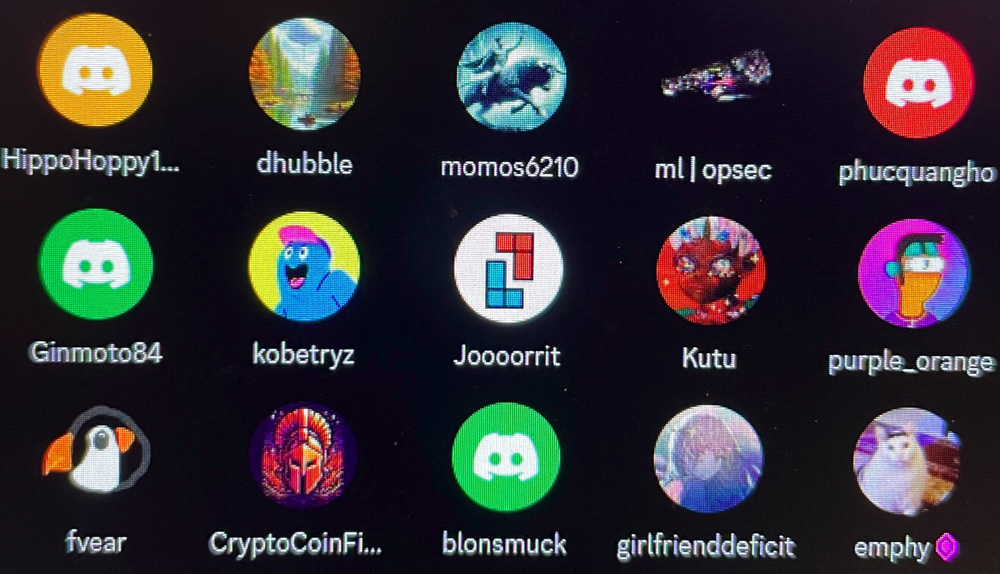

19 Welcome to
Bittensor
The end of a chapter,
a journey full of choices and
an unexpected digital adventure

I still remember well, the day in 2019 when the adventure of going to study in Wageningen began. The boys I came to look for a room with, Timo, Sijmen and Hinne, first-year bachelor students who were in the prime of their student days, could hardly believe that one of the kandidate roommates was a 27-year-old high school teacher from Breda. I had to stand in front of the class again the next day, but a lot of bottles of beer were opened anyway, so I left the car and drove back to Breda the next morning with a big smile on my face, just in time to receive my students for biology class. When I still hadn't heard from the boys after a week, and had almost given up hope of getting a room, I decided against my better judgment to send a message anyway. I was of course pleasantly surprised when I heard that they had chosen me as their new roommate. It was the start of a wonderful time in Wageningen. The pre-master was passed, I became a member of the Wageningen rowing club Argo, went bird watching a lot, and even fell in love for the first time. Studying in English and meeting so many wise people from all over the world was so inspiring that I even opened a book in the library on the weekend to avoid failing. In the forest and nature management lectures, there were heated discussions, for example whether people should live better with or at a distance from nature. About wild animals, indigenous tribes, about CO2 emissions and of course also about monitoring the earth with the help of technology. Unfortunately, it was true that, just as quickly as the vibrant Wageningen student life emerged, it disappeared just as quickly. In the more individual final year of study, you had a lot less connection with student life, which meant that suddenly the age of 29 started to play a role, while I thought ‘Guys, I’m still really young!’
 We are making a leap of 2 years. It is February 2024, summer in the southern hemisphere. The mercury is hitting 45 degrees as I am milking cows on the Iparoma farm in the sweltering Chaco in Paraguay, and I see a PhD about monitoring wildlife in a nature reserve in Huelva, located in the south of Spain. While I am still thinking about it, I receive a message and not much later I am in a Zoom conversation with 3 Spanish bright minds. The last 10 minutes do not happen, because the internet here breaks down every day, and yet a few days later I hear that they are very positive about my application. I have of course learned a lot at BOX21 and had a great time, but I have also noticed that the work has become increasingly more repetitive lately and that the time Ramon had available was sometimes limited, which of course is an extra challenge when he is also your only colleague.
We are making a leap of 2 years. It is February 2024, summer in the southern hemisphere. The mercury is hitting 45 degrees as I am milking cows on the Iparoma farm in the sweltering Chaco in Paraguay, and I see a PhD about monitoring wildlife in a nature reserve in Huelva, located in the south of Spain. While I am still thinking about it, I receive a message and not much later I am in a Zoom conversation with 3 Spanish bright minds. The last 10 minutes do not happen, because the internet here breaks down every day, and yet a few days later I hear that they are very positive about my application. I have of course learned a lot at BOX21 and had a great time, but I have also noticed that the work has become increasingly more repetitive lately and that the time Ramon had available was sometimes limited, which of course is an extra challenge when he is also your only colleague.
All in all, it is bizarre how these important career considerations took place here at this remote workaway location in Paraguay. Full of thoughts, I suddenly remembered that in my first week in South America, Kokopeli hostel in Lima (Peru) I met a boy who told me about the online platform Bittensor. “If you are interested in artificial intelligence, you should definitely check out Bittensor,” he had told me. I remember that I had taken a quick look at it at the time, but that it seemed very complicated to me. Suddenly, the name Bittensor comes back to haunt me and I decide to explore it further. Bittensor is an online environment for all kinds of computer applications to which anyone can contribute programs or code. The topics are so incredibly cool, and the idea of meeting digital nomads who are just as eager as I am to deliver the best codes is decisive. “Walk the line” (take a risk) is a saying that I have had in my WhatsApp profile for years and that of course applies here completely. I trust that if you do something with motivation, you will always get the furthest. The expat experience is not over yet. Even though I have been trying to get a PhD position for two years, I still decide to let the university in Spain know that I am suffering from my application.
Half a year has passed, August 2024. By stopping my work for Ramon and website BOX21, I say goodbye to the last bit of memory of those wonderful student days. A new chapter is dawning. Behind the scenes, I am already busy learning how Bittensor works. The platform only exists online without offices in any country. While large tech companies such as Apple and Google keep their algorithms secret to strengthen their monopoly position, the idea of Bittensor is that everyone has access to all codes. And wherever you are in the world and regardless of your background, you can get started at Bittensor without applying. That almost sounds too good to be true, right? The downside is that only the people who deliver the best code or scripts will be rewarded, so you are really competitors of each other. All payment transactions go via cryptocurrency TAO, in which you also receive your salary, although that may take a while. The value of the TAO coin fluctuates so much that your money can suddenly be worth double or even half two weeks later. In my first weeks I get to know some friendly participants, Inky from America and ISOW from France. I am amazed at how helpful the new colleagues are despite the competition. To really get started I have to buy some TAO myself. For this I send my Dutch euros to a company in America that exchanges them for USDT, with which I can buy TAO and then store it on my own laptop. Three years ago investing and crypto were still largely unknown, and now it is even required for this new job. Before you can start earning some TAO in a Bittensor group that they call subnets, you first have to pay some TAO to participate. My Bittensor journey starts in subnet WOMBO, where they use an AI model to automatically generate photos based on a text description. I have to rent a powerful GPU computer to generate those photos. That computer is on 24/7 somewhere in the world and I control it from my own laptop. The GPU I rent is from the brand Nvidia, and since I also have a number of Nvidia shares, I am renting a little bit of my own product, funnily enough.

I explore different subnets, about predicting sports matches, about calculation, and a subnet about scraping, where I have to retrieve millions of messages from social media platform Reddit. Even though I would like to earn something from it in the long run, for now it is especially important that I learn how everything works. The Canadian founder, Jacob Robbert Steeves, is adored by the community. Bittensor could even become much bigger than Google one day because bittensor has no restrictions at all. In a short time, the platform has grown like crazy and that is not without risks. A hacker has penetrated the system and is trying to steal TAO from the users. I appear to have downloaded exactly the version of Bittensor that he has penetrated. Fortunately, I have not yet made a financial transaction that would have prevented the person from getting my TAOs. I escape with a fright. There is even an emergency meeting, and despite the fact that it is of course a scary situation, the feeling of brotherhood prevails for me because we are all going through this together.
When I have been in Paraguay for half a year, my visa expires. The more stable life in the center of Asuncion does me good, and especially now that Bittensor is new, staying here for a while would be ideal. I get the tip via an expats WhatsApp group to apply for a Paraguayan residence permit so that you are always welcome in the MERCOSUR countries that Paraguay is part of. You could even buy a piece of land, although I have my doubts whether that will ever be interesting for me. People who have applied for this Paraguayan residence permit must return to Paraguay at least once a year in the following two years. So if this all goes through, I can now add two exciting trips to my travel agenda. My brothers were so kind to scour Breda for the documents and send them to Paraguay. Sorting out the necessary documents is a hell of a job, but I suddenly got help from Simon, a retired Dutchman who, to my great surprise, turned out to live in my neighborhood.
 I haven't earned a dime yet, but for the first time since graduating I really have confidence that things will turn out well. Whether my programming background will be sufficient to compete with other programmers on Bittensor remains to be seen. But just the time I'm going to invest in such a wide range of subjects will bring a lot of new beauty. Deep down I'm itching to do old-fashioned things again, festivals, vacations, snorkeling, cafes, making friends, and so on. I'm really looking forward to that to open myself up a bit more. It really seems within reach now. Mastering Bittensor will be the last hurdle. After a very long period of much patience and perseverance, the fruits will finally be reaped. Or as Don Julio, an employee of the Iparoma farm, always said: “La paciencia esta amargo, pero la cosecha es dulce”.
I haven't earned a dime yet, but for the first time since graduating I really have confidence that things will turn out well. Whether my programming background will be sufficient to compete with other programmers on Bittensor remains to be seen. But just the time I'm going to invest in such a wide range of subjects will bring a lot of new beauty. Deep down I'm itching to do old-fashioned things again, festivals, vacations, snorkeling, cafes, making friends, and so on. I'm really looking forward to that to open myself up a bit more. It really seems within reach now. Mastering Bittensor will be the last hurdle. After a very long period of much patience and perseverance, the fruits will finally be reaped. Or as Don Julio, an employee of the Iparoma farm, always said: “La paciencia esta amargo, pero la cosecha es dulce”.